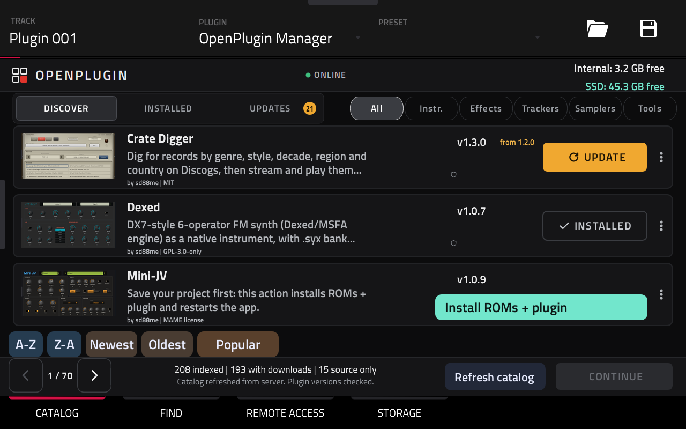
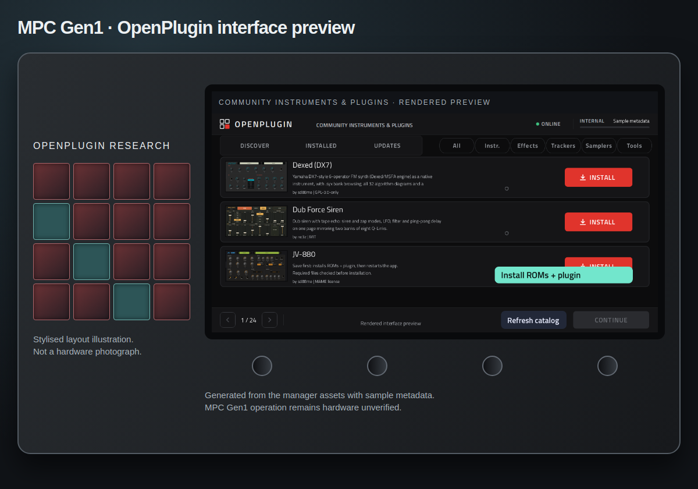
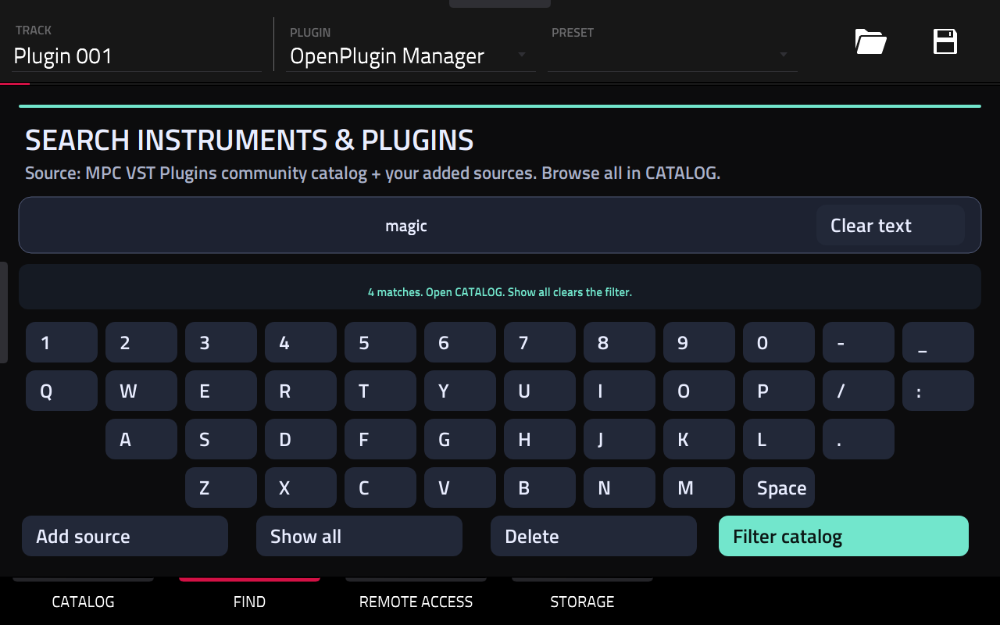
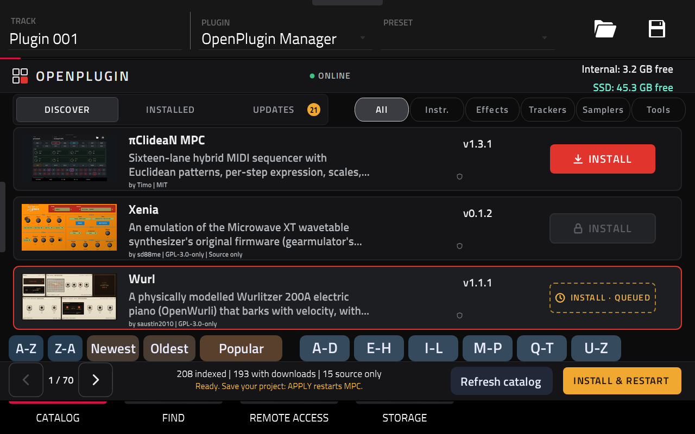
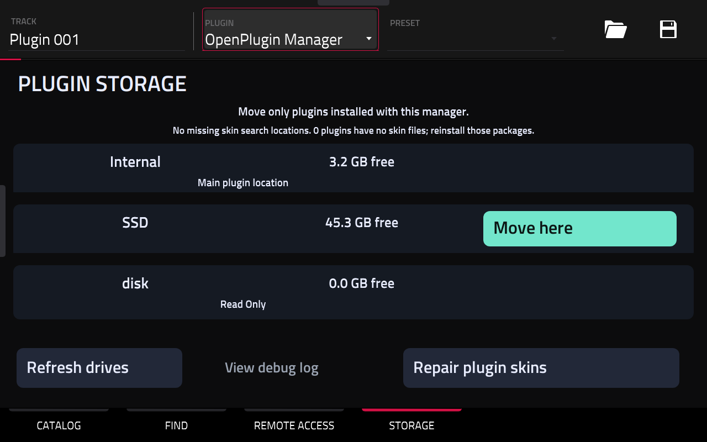
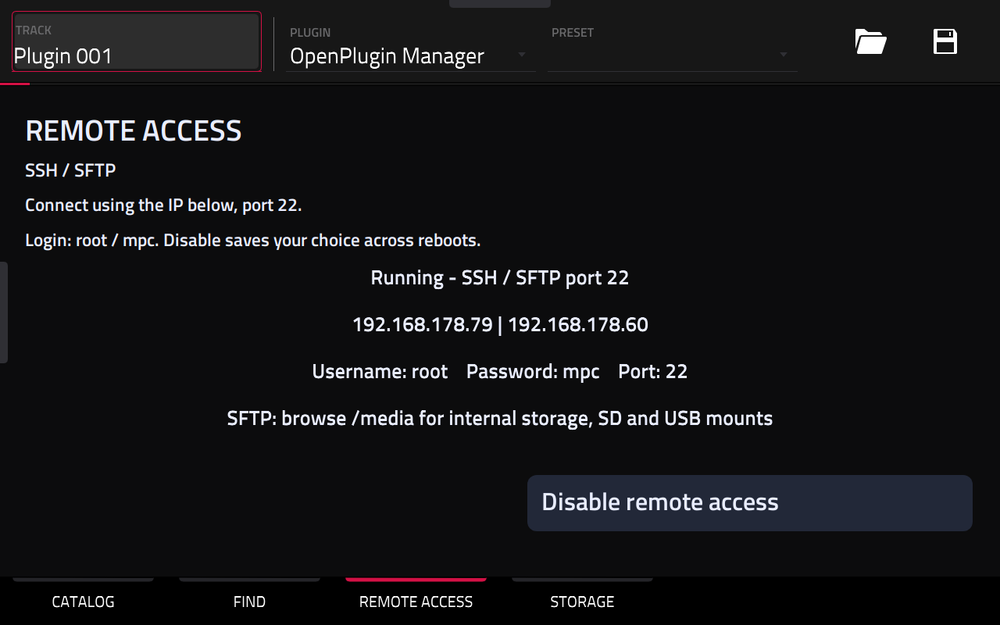

16 audio + 16 plugin tracks
More room to build your arrangement. The Force image retains Tracks16 alongside the new manager and storage features.
MAGICSTINO OPENPLUGIN · MANAGER 0.9.0
Discover and install community plugins directly on your Force touchscreen. Browse the catalog, choose a plugin, and let OpenPlugin Manager handle the installation.
16 audio + 16 plugin tracks. Easy sorting. Internal ↔ SSD moves. Skin repair.
0.9.0 Force image candidate · Full-image hardware acceptance pending.

More room to build your arrangement. The Force image retains Tracks16 alongside the new manager and storage features.
A–Z, Z–A, Newest, Oldest and Popular. Jump to a letter group and refine in one row.
Move eligible manager-owned plugins, verify the copy and free source space. Return to Internal when needed.
Progress, drive space, missing-drive guidance and a Repair plugin skins button.
Tracks16 update. Based on original firmware 3.10.0, with 16 audio tracks, 16 plugin tracks, Plugin Manager and SSH/SFTP. Install the update via USB; plugins install separately from the manager.
Details →FORCE RELEASE CANDIDATE
The new Force image includes Manager 0.9.0, managed-drive startup support, SSH/SFTP and the existing Tracks16 feature: 16 audio + 16 plugin tracks. It is based on firmware 3.10.0.
Full-image flash and boot acceptance is pending. Manager features were tested separately on the owner's Force. The previous published Force and MPC Gen1 images remain available while the new Force candidate is validated.
Downloads and validation status Previous published images
Use only the image for your device family, verify its checksum and save projects before updating through the normal USB firmware updater. No new MPC Gen1 image is included in this Force release.
ON A REAL FORCE
Owner-supplied photos of the Force touchscreen. Browse the catalog, install from a card, then open the plugin. Tap a photo to enlarge it. These photos show individual results, not a guarantee that every plugin or MPC model works.
Plugin cards, categories, installed status and the Refresh catalog action.
The combined installation action on the JV-880 card.
Select Plugin Manager from PLUGINS → VST on a plugin track.
The supplied Force photo shows the JV-880 control interface.
Dexed’s synth controls open on the Force touchscreen.
The Galactic effect interface running on the Force.
Effect selection on a Force track.
This is a styled render, not a hardware photo. Physical MPC operation still needs testing.

OPENPLUGIN MANAGER 0.9.0
Open PLUGINS → VST → OpenPlugin Manager. Its leading space keeps it near the top of the chooser.

Filter by category or search names, authors and tags. Newest/Oldest use update dates, with compatible release dates as a fallback. Popular uses upstream download totals.

Select Install or Update, press Continue, then follow the confirmation. Save your project before the final install/restart action.

Open Storage, choose Move here on a viable drive and review before confirming. Verified moves free eligible source copies. New compatible manager installs follow the chosen location. Only manager-owned, movable packages are included.
Drive checks run when Storage opens. Progress explains longer checks and copies. If a drive disappears, reconnect it before moving its plugins elsewhere.

Storage includes Repair plugin skins. Successful manager installs also maintain skin registrations. Missing files require reinstalling the affected plugin. Remote Access shows the IP, port and login hint, and remembers enable/disable.
Read the full GitHub manual ↗ · 0.9.0 release notes ↗
Normal PNG artwork replaces thousands of image parameters. Owner testing showed much faster loading. Missing artwork uses a gradient; catalog refresh does not download new artwork into the skin.
COMMUNITY INDEX
Indexed from MPC VST Plugins and reviewed community metadata. Samplers overlap instruments; categories can be empty.
Loading catalog…
Cards refresh with the scheduled catalog. Website actions open the author’s project or releases; they do not install on your device.
PUBLISH A PLUGIN
Plugin authors can submit a public project URL, or propose a change to the source list. A root openplugin.json describes the plugin; it is different from the package’s mpc-plugin.json. Submissions are reviewed, not added automatically from an issue.
Set title, author, category, tags and image URLs. Source-only projects can be listed.
Manifest example ↗Check the manifest against the community format. Native packages also need the existing portable ARMv7 package contract.
JSON schema ↗ · Package format ↗Submit the project URL using the form (GitHub account required). A maintainer adds it to the source list; the six-hour bridge then updates the JSON and cards. Package downloads need a separate review.
Submit a project ↗Discovery guide for users and authors ↗
The bridge starts with MPC VST Plugins, then checks registered repositories and bounded GitHub searches. Search matches without a valid manifest remain candidates.
App catalog · Discovery report · Source registry
Device FIND accepts owner/repository or its GitHub URL. It checks the latest stable release for -mpc-armv7.zip, a SHA256 digest and mpc-plugin.json. Arbitrary websites and desktop VSTs are not supported inputs.
.zip package · .so native library · .json metadata · .xml registration · .xpl preset · .xpj project · .sh installer · .img firmware · .sha256 checksum · .pub public SSH key.
Desktop .dll, .exe, .dmg and general .vst3 bundles are not native MPC packages.
REMOTE ACCESS · OPENPLUGIN 0.9.0
Verified on the owner’s Force · 10 October 2026: SSH login, SFTP upload and download, matching file contents, and removal of the temporary test file.
Open Plugin Manager → REMOTE ACCESS. SSH starts automatically with the shared password mpc. Read the IP, use password mpc, and connect with username root, port 22. Choose SFTP in your file-transfer app and browse /media for internal, SD and USB sample folders.
Disable SSH saves your choice across reboots. This is full root access: use a trusted network. SSH login and SFTP are verified on one Force. Physical MPC Gen1 operation, disable/re-enable and reboot persistence still need testing.
BUILD & CONTRIBUTE
Supply your original Force and MPC Gen1 firmware. The repository contains our additions and adapter, not Akai’s application source.
git clone https://github.com/MagicStino/force-openplugin.git
cd force-openplugin
bash build.sh /path/Force-3.10.0-update.img \
/path/MPC-3.10.0-Gen1-update.img /path/outputLinux, Python 3.12+, git, gcc, e2fsprogs, binutils, OpenSSH tools and Chromium libraries are required. The build produces hardware-unverified images, checksums and manifests; it does not flash.
Build details ↗ · SSH / SFTP Remote Access ↗ · Firmware integration ↗
TEST STATUS · 6 NOVEMBER 2026
It may lack a stable ARMv7 release, checksum or compatible manifest. Desktop plugins and source code alone cannot be installed. Network errors and rate limits can also interfere.
Hakai-associated native plugins need the same compatible package format. Universal compatibility is not established. MPC Sample is a separate kit editor; sample preview and kit import are not implemented.
No analytics, accounts or uploads. Plugin images load from their upstream hosts, which receive the request. GitHub Pages has its own logging policies. Image rights remain with their authors.
No matching answer.
COMMUNITY CREDIT
NoQuestion & dustyslices first documented the VST method in “Proof of Concept: Custom Standalone Plugins” on MPC-Forums (September 2026), as credited by Open MPC.
sd88me set up the catalog and provides the MPC VST Plugins collection and upstream catalog JSON used by our server bridge. The repository also supplies the native wrapper, skin and build tooling used here. Plugins, ports, screenshots and artwork remain credited to their individual authors in the catalog and source/license records.
poloq Plugin Manager is the foundation of the native manager and already supports installation from the device. Our additions package it into the firmware, add illustrated cards and clearer search, publish a refreshed catalog bridge, retain a saved catalog offline, and combine JV ROM/plugin setup.
MockbaTheBorg / MockbaMod: SSH, screen and mouse information and community code that informed our remote-access and testing work. Bundled mouse code: no3z, Amit Talwar and bonsaipanda. Original source credits and licenses are preserved.
After the initial USB firmware update, you can discover and install compatible plugins directly on the Force/MPC touchscreen instead of transferring each package from a computer. This project is AI-assisted, independent and non-commercial; it does not replace the original authors’ work or licenses.
ABOUT
OpenPlugin Manager 0.9.0 · Independent community project for Akai Force.
github.com/MagicStino/force-openplugin
GitHub manual
The manager's ABOUT tab displays its version, repository link and community credits. Built on poloq’s original Plugin Manager and Open MPC tools by sd88me and the community; plugin authors retain their credits and licenses.
MockbaTheBorg / MockbaMod: SSH, screen and mouse information and community code that informed our remote-access and testing work. Bundled mouse code: no3z, Amit Talwar and bonsaipanda. Original source credits and licenses are preserved.